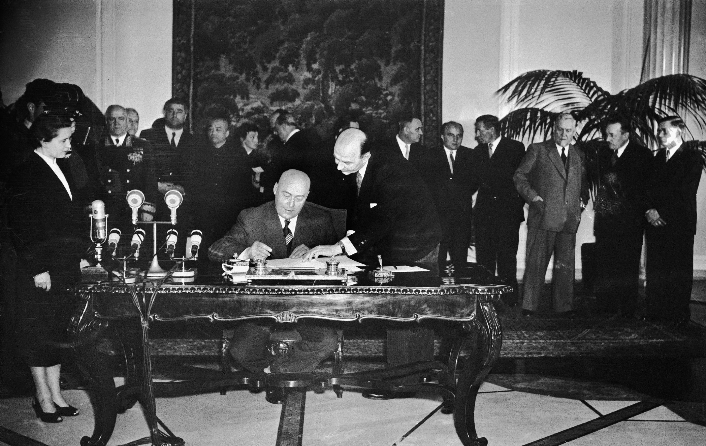
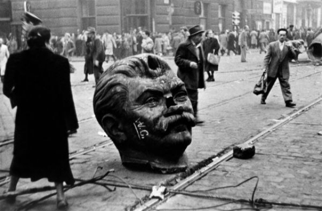
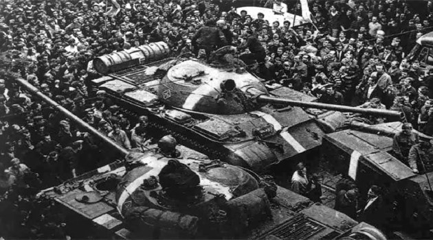

Першими симптомами кризи, яка насувалась, стали погіршання економічної ситуації і поява нових соціальних проблем. З'явились риси, не притаманні соціалізму, - безробіття, інфляція, падіння життєвого рівня, почали зникати ті ознаки, що раніше асоціювались із завоюваннями соціалізму, - стабільність, тверді ціни.
Політичне банкрутство керівництва правлячих партій, недосконалість адміністративно-командних методів управління та небажання більшості населення жити за авторитарного режиму - все це зумовило виникнення своєрідної революційної ситуації в цих країнах.
У різних державах вона складалась і розвивалась неоднаково. Проте загальним для всіх країн було прагнення ліквідувати монопольну владу правлячих партій, встановити демократичну форму правління і на основі широкої демократії обновити соціально-економічне й політичне життя суспільства.
Могутнім каталізатором революційних процесів у регіоні став національний фактор. Його виявлення були дуже відмінні в різних країнах і залежали від багатьох факторів:
Особливо великий вплив справляли національні проблеми на розвиток подій у Югославії, Чехословаччині, Румунії, Болгарії.
Наступ Червоної армії та активізація сил Опору в країнах Центрально-Східної Європи заклали передумови для створення урядів національних фронтів. Проте розгром нацистських сил створював для СРСР сприятливі передумови для політики «експорту революції» та розширення своїх сфер впливу. Саме з такою метою Червона армія починає активно включатись в політичне життя «визволених» країн. Виділяють такі етапи встановлення комуністичних режимів у країнах Центрально-Східної Європи.
 Особливостями першого етапу була ліквідація профашистських організацій та сил колабораціоністів, відновлювались демократичні інститути. Для другого етапу були характерними зміни в економічному житті країн, в яких вже помітно відчувався радянський чинник. Та найсильнішим радянське вручання відчувалось саме під час третього етапу. Москва створила у 1947 р. Інформаційне бюро 9 комуністичних партій (СРСР, Польщі Болгарії, Чехословаччини, Угорщини, Румунії, Югославії, Франції та Італії). Саме з цього часу розпочалось відтворення радянського зразка з урахуванням місцевих особливостей – будівництво соціалізму – індустріалізація та кооперація сільського господарства. Колективізація мала примусовий характер. Крім того, в кожні з країн склався культ власних вождів – Б. Берута – Польща, К. Готвальд – Чехословаччина, М. Ракоші – Угорщина.
Встановлення про радянських режимів у країнах Центрально-Східної Європи варто розглядати в контексті поляризації світу та загострення відносин між СРСР та Заходом. Саме новостворені радянські режими в країнах Центрально-Східної Європи мали стати основою для майбутньої соціалістичного блоку на чолі з СРСР.
Вже в січні 1949 р. розпочалось інституційне оформлення прорадянского блоку, було утворено Раду Економічної Взаємодопомоги (РЕВ) для спільного розв’язання економічних проблем, та як своєрідна відповідь на прийняття плану Маршалла країнами західної Європи. Згодом членами РЕВ стали Албанія, Монголія, НДР.
Наступним кроком стало створення власного військового союзу – Організація Варшавського Договору в 1955 р., як відповідь на вступ ФРН у НАТО. Членами ОВД стали СРСР, НДР, Чехословаччина, Болгарія, Угорщина, Румунія, Польща. Лідером та спонсором блоку безперечно був СРСР.
У 1950-і роки в країнах Східної Європи почала наростати нестабільність, зумовлена погіршенням економічної ситуації, та «відлигою» в СРСР, важливим дестабілізуючим чинником в країнах соцтабору стали економічні успіхи країн Західної Європи. Найсуттєвіше криза проявлялась в Польщі та Угорщині. В Угорщині справа дійшла до антикомуністичної революції.
 1 листопада 1956 р. лідер революції І. Надь сформував коаліційний уряд, який проголосив нейтралітет Угорщини та її вихід з ОВД і оголосив прозахідний курс. У відповідь СРСР увів війська в Будапешт та жорстоко придушив угорців, жертвами радянської агресії стало близько 50 тисяч. Революція в Угорщині стала серйозним викликом для усіх країн соцтабору, адже вони також могли зазнати агресії зі сторони СРСР, тому уряди цих країн мусіли проводити досить обережно політику, яка була спрямована на консервування режиму.
Але це все ж не усунуло суперечливих тенденцій економічного та політичного розвитку Чехословаччини. В 1968 р. у відставку було відправлено керівника ЧСР А. Новотного, до влади прийшов демократично налаштований А. Дубчек. Нове керівництво розпочало лібералізацію та будівництво «соціалізму з людським обличчям», суть якого полягала у поєднанні соціалістичного суспільства з елементами ринкової економіки, плюралізмом та демократичними інститутами. Варто зазначити про масову підтримку чехословацьким суспільством нових заходів КПЧ, розпочалась «Празька весна». Яка не могла не викликати занепокоєння у Кремля, яке ініціювало введення сил ОВД в Чехословаччину та усунення Дубчека від влади, його замінили Г. Гусаком, який провадив політику на збереження соціалістичного устрою.
 Після придушення «Празької весни» розпочалось посилення тоталітарних режимів в Центрально-Східній Європі, активізувався дисидентський рух, який вимагав демократизації та лібералізації суспільно-політичного життя.